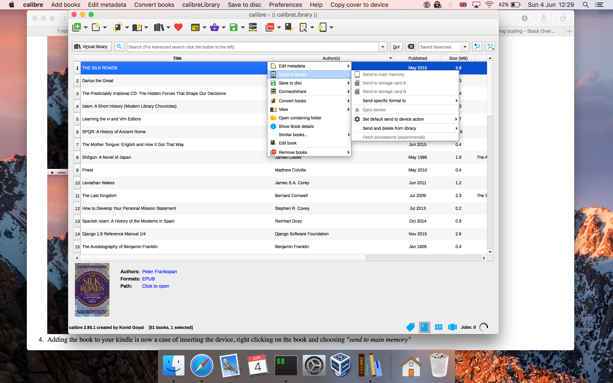

Using Calibre Guide
(guide works on Windows and macOS)
Downloading Your Books
- First download your .acsm file from the site your purchased your
book

- Then import that book into Adobe Digital Editions


- In calibre add the book


- Adding the book to your kindle is now a case of inserting the
device, right clicking on the book and choosing "send to main
memory"
